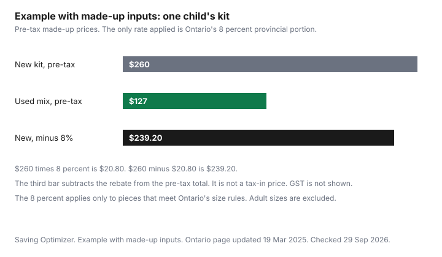

Clothing · Canada
Kids' Winter Gear in Canada Without Overspending: Snowsuits, Boots, Mitts and Hand-Me-Downs
A full winter kit for one child in Canada is a snowsuit or jacket and pants, boots, mitts, a hat, a neck warmer and spare mitts. In Ontario, the 8 percent provincial portion of the HST is rebated on qualifying children’s clothing and footwear. A full winter kit for one child is a snowsuit or a jacket and snow pants, boots, mitts, a hat, a neck warmer, and a spare pair of mitts. For two or three children it lands in October, next to groceries and everything else. The dollars in the chart are an example with made-up inputs. The only tax rate applied there is Ontario's 8 percent provincial portion.
Key takeaways
- List the kit per child: suit or jacket and pants, boots, mitts, hat, neck warmer, spare mitts. Buy, use, or hand down each line on purpose.
- Ontario rebates the 8 percent provincial portion of the HST on qualifying children's clothing and footwear. The size limits are Canada Standard Size 16 for girls and 20 for boys, and footwear to size six. The ontario.ca page does not state an insole length.
- Other provinces: check the province.
- Search recalls-rappels.canada.ca before you buy used outerwear. No specific recall is named here.
- Example with made-up inputs: a $260 new kit, a $127 used mix, and $20.80 of Ontario rebate if every piece qualifies.
The full winter kit list and what it really costs
Write one row per child, not one family total that hides a missing hat. The pieces that get lost are mitts.
The piece that gets outgrown first is often the suit. The piece that is unsafe when it is wrong is the boot. A neck warmer is not a scarf with a long end if the daycare forbids dangling ends. Ask. The grocery week does not pay for this. If October is when it all hits, the sinking-fund guide is where a once-a-year kit belongs. The family grocery guide stays on food.
Example with made-up inputs, for one child, pre-tax: snowsuit $140, boots $60, mitts $18, hat $16, neck warmer $12, spare mitts $14. That is $260. A used mix in the same fiction: snowsuit $50, boots $25, and the hat, mitts, neck warmer and spare mitts as in the new list except the spare mitts at $6, which is $127. These are not store prices. Ontario's 8 percent of $260 is $20.80, and $260 minus $20.80 is $239.20. That third figure subtracts the provincial portion from the pre-tax total. It is not a tax-included checkout, and GST is not in it. The 8 percent applies only to pieces that meet Ontario's rules. An adult size bought for a child does not get it.
| Piece | Example, buy new | Example, this used mix | Hand-down note |
|---|---|---|---|
| Snowsuit, or jacket and snow pants | $140 | $50 | Pass down only if the next child will wear it before the cuffs are unsafe or the insulation is packed flat. |
| Boots | $60 | $25 | Do not pass down a smooth sole or a boot that trips. Fit the foot that will wear them. |
| Mitts | $18 | $18 new in this mix | The pair that gets lost. A spare is the point of the next row. |
| Hat | $16 | $16 new in this mix | Easy to hand down if it still covers ears. |
| Neck warmer | $12 | $12 new in this mix | Prefer a warmer over a long scarf if the school asks for that. |
| Spare mitts | $14 | $6 | The spare is what makes a lost mitt a laundry problem instead of a same-day purchase. |
| Total, pre-tax, made-up | $260 | $127 | Ontario 8 percent of the $260, if every piece qualifies, is $20.80. |

Sizing up: how much room to buy without safety or warmth issues
Room to grow is room for a mid-layer and for toes that are not curled. It is not two sizes "just in case" if the child cannot walk or the wrists are open to snow in November. The CCOHS figure of about 12.5 mm of toe room is on the safety-footwear sheet and is cited on the adult boot guide as a workplace note. It is not a child's snow-boot rule.
Check the suit on the child: wrists covered, ankles covered, hood that stays on without blocking sight, and a zipper they can work if they are old enough. A suit they will "grow into by March" is a cold suit in November. Buy the size that is safe now if you cannot honestly say they will wear it this month.
One-piece vs two-piece, and what daycares and schools ask for
A one-piece blocks the gap at the waist. It is one purchase and one thing to lose.
It is also one thing to replace when the sleeves are short and the legs still fit, and it is slower in a bathroom. A two-piece lets you replace the piece that failed and hand the other piece down. Snow pants can outlast a jacket or the other way around.
Daycares and schools add rules this page will not invent: some want a one-piece, some forbid scarves and drawstrings, some want labelled mitts. Ask the program before you buy a set they will send home. That answer is local.
Used, swap and consignment options for fast-outgrown gear
The suit that lasted one winter on the first child is the second child's first winter, if it is still safe. Swaps with people you know are the same idea without a store.
Consignment and resale shops are the version with a till. Once Upon a Child's homepage was cited as of 29 Sep 2026. No buy-back rate or Canadian price list was quoted from it. Read the store's current rules. The household used-goods guide is the general secondhand habit, not a snowsuit inspection.
Before used outerwear comes into the house, search recalls-rappels.canada.ca for the brand and for drawstrings. The recalls home page was cited as of 29 Sep 2026. No specific clothing recall is cited here, because none was selected as "the" current one. Do not use a recalled item. Look at the boot sole, the zipper, and the suit's insulation. A packed-flat suit is not warm because it was cheap.
Provincial sales-tax relief on children's clothing and footwear: Ontario's rebate and how to check your province
Rules differ by province. Ontario's page, updated 19 March 2025, says the province provides a point-of-sale rebate of the 8 percent provincial portion of the HST on children's clothing and footwear, among other goods.
The CRA administers it. If the supplier does not give the rebate, the page says you may claim it with form GST189. The CRA number on that page is 1-800-959-8287. This is not tax advice.
Clothing that qualifies, in Ontario's words: designed for babies, and for girls up to and including girls' Canada Standard Size 16 and boys up to and including boys' Canada Standard Size 20, including baby bibs, bunting blankets and receiving blankets. If there is no Canada Standard Size, girls' and boys' small, medium or large can qualify. Children's hosiery or stretchy socks, hats, scarves, gloves and mittens in sizes and styles designated for children are included. Excluded: costumes, adult-sized garments even if acquired for a child, and garments and accessories designed to prevent bodily injury, like sports protective equipment. Footwear: designed for babies and for girls and boys up to and including girls' size six and boys' size six. Without a numerical size, small, medium or large designated for girls or boys. Excluded: skates, rollerblades, ski-boots, footwear with cleats or similar footwear, adult-sized footwear even if acquired for a child, and footwear designed to prevent bodily injury. Do not invent one.
| Province | What the page says | What to do |
|---|---|---|
| Ontario | Point-of-sale rebate of the 8 percent provincial portion of the HST. Size limits in the paragraphs above. Page updated 19 March 2025. | Check the till. If the rebate was not given, the page points to GST189 and the CRA at 1-800-959-8287. |
| Nova Scotia | The tax-101 PDF says HST is 14 percent, 5 percent federal and 9 percent provincial, and that a point-of-sale rebate eliminates the provincial portion on children's clothing up to Canada standards size 20 and 16 respectively, excluding sports equipment and costumes, and on children's footwear up to size 6, excluding skates, cleats, specialty boots and diving flippers. The PDF has no revision date printed on the page. | Confirm the PDF is still the current sheet before you subtract 9 percent. |
| Prince Edward Island | The publication page for Revenue Tax Guide 197, published 29 June 2016, describes a point-of-sale rebate on children's clothing and footwear and prints "nine per cent" as the provincial component on that page. The size rules in the province's retail sales tax regulation use girls' size 16, boys' size 20, and an insole length of 24.25 centimetres for footwear. | Do not subtract 9 percent until you confirm it is still the rate. The publication date is 2016. |
| British Columbia | Bulletin PST 201, revised January 2024, exempts children's-sized clothing and footwear from PST: girls' national standard size 16, boys' size 20, and footwear with an insole of 24.25 centimetres or less. Adult-sized clothing for a child under 15 can be exempt with form FIN 425. No PST percent is applied on this page. | Children's sizes on that list do not need the certificate. Adult sizes do. |
| Any other province | Check your province. | Check your province. Do not copy Ontario's 8 percent. |
Resale value: buy brands that sell again in spring
"Brands that sell again" is a local observation, not a ranking this page will print. In spring, look at what is actually listed in your city, in the sizes you will be finished with, and notice what sits.
A name that does not resell where you live is not a resale plan. A no-name suit that a younger cousin will wear is a resale plan of a different kind. Buy the safe, warm piece first. The spring price is a bonus, not the reason to overbuy in October.
Keep the receipt if you might return a new piece, and keep the recall check with the used piece. The adult wardrobe version of cost per wear is the capsule guide. A child's kit rarely lasts the five winters that guide uses for a coat. That is why the hand-down column is the saving.
Sources
- Ontario, HST point-of-sale rebates, ontario.ca, updated 19 March 2025, published 17 August 2023, as of 29 Sep 2026. Eight percent provincial portion. Clothing and footwear size limits and exclusions as in the text. GST189 if the supplier does not rebate. CRA 1-800-959-8287. No insole length on that page.
- Nova Scotia, tax-101 Harmonized Sales Tax PDF, novascotia.ca, as of 29 Sep 2026. HST 14 percent (5 percent federal and 9 percent provincial). Point-of-sale rebate of the provincial portion on the children's clothing and footwear lines quoted above. No revision date on the PDF page.
- Prince Edward Island, Revenue Tax Guide 197 publication page, published 29 June 2016, as of 29 Sep 2026. The page prints a nine percent component. Not used as a 2026 rate. Size rules from the province's Retail Sales Tax Act regulations as of 29 Sep 2026, including footwear insole length 24.25 centimetres.
- British Columbia, Bulletin PST 201, Children's Clothing and Footwear, issued March 2013, revised January 2024, as of 29 Sep 2026. Exemption, girls' size 16, boys' size 20, insole 24.25 centimetres, FIN 425 for adult sizes for a child under 15.
- Health Canada recalls and safety alerts home page, as of 29 Sep 2026. No specific recall cited.
- Once Upon a Child homepage, as of 29 Sep 2026. No buy-back rate quoted.
- Kit dollars are an example with made-up inputs. Ontario's 8 percent is the only rate applied to them.
Frequently asked questions
How much does a full winter kit for a child cost?
This page does not have a market total. The chart uses an example with made-up inputs: $260 pre-tax for a new kit, $127 for a used mix, and $20.80 as Ontario's 8 percent provincial portion on that $260 if every piece qualifies. Your till price is the only real one. Put the kit in a sinking fund if two or three children need it in the same October.
Is a one-piece or two-piece snowsuit better value?
A one-piece keeps snow out of the waist and is harder to peel off for the bathroom, and you replace the whole suit when only the arms are short. A two-piece lets you replace the jacket or the pants and pass one piece down. Which one a daycare or school wants is their rule. Ask them.
Is kids' clothing tax-free in Ontario?
No. Ontario rebates the 8 percent provincial portion of the HST at the till on qualifying children's clothing and footwear. The federal portion is not what that page calls the rebate. Qualifying clothing goes up to girls' Canada Standard Size 16 and boys' size 20, with the exclusions on the ontario.ca page, including costumes and adult sizes. If the till does not give the rebate, the page points you to the CRA's GST189 form.
Is it safe to buy used snowsuits and boots?
Search the Health Canada recalls site for the brand and for drawstrings before you buy used outerwear, and do not use a recalled item. A used boot still has to fit the foot that will wear it, with room for a sock and without a sole that is already smooth. This guide does not cite a specific recall, so it does not name one.
How much room should I leave to grow into?
Leave room for the layer they will wear underneath and for toes that are not curled, and do not buy a boot so large that it trips them. The 12.5 mm toe-room figure on the CCOHS safety-footwear sheet is about workplace boots, not a child's snowsuit. A size they will reach in March does not help in November if the suit is unsafe or cold now.
Researched and drafted with AI assistance and fact-checked against official Canadian sources. How we create content.
Disclosure: Discounted retailer gift cards and cash-back portal offers are offer types. Saving Optimizer may earn a commission if a partner link is added later. No partnership is claimed. A card discount does not change whether a size qualifies for a provincial rebate. Education only. This is not tax advice. Confirm the rebate with your province or the CRA.